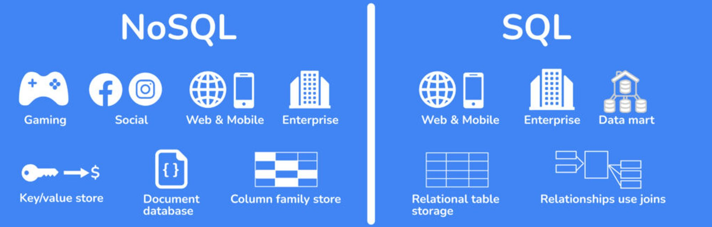

Primeiro, começamos vendo tipos de dados, entre eles existem:
- Dados Estruturados
- Dados não Estruturados
- Dados Semi Estruturados
Primeiro, começamos vendo tipos de dados, entre eles existem:
Posteriormente, vimos o diagrama (ER) Entidade Relacionamento e alguns conceitos importantes como:
Depois de aprender a fazer Diagramas ER, começamos a aprender com o SGBD do PostegreSQL,
utilizando a Interface de desenvolvimento PgAdmin.
Aprendemos:
-- cria uma tabela
CREATE TABLE livros (
isbn SERIAL PRIMARY KEY,
titulo varchar(60),
editora varchar(50),
ano DATE
)
-- preencha as colunas da tabela criada
-- segue essa ordem
INSERT INTO livros (titulo, editora, ano)
VALUES
('Dom Quixote', 'Companhia das Letras', '1605-01-01'),
('Crime e Castigo', 'Editora 34', '1866-01-01'),
('1984', 'Companhia das Letras', '1949-01-01'),
('O Pequeno Príncipe', 'Agir', '1943-01-01'),
('Orgulho e Preconceito', 'Martin Claret', '1813-01-01'),
('Memórias Póstumas de Brás Cubas', 'Companhia das Letras', '1881-01-01'),
('A Arte da Guerra', 'Cultrix', '500-01-01'),
('O Hobbit', 'WMF Martins Fontes', '1937-01-01'),
('O Senhor dos Anéis: A Sociedade do Anel', 'Martins Fontes', '1954-01-01'),
('Harry Potter e a Pedra Filosofal', 'Rocco', '1997-01-01');
-- mostra todas as linhas e colunas da tabela
SELECT * FROM autores
-- seleciona duas colunas de duas tabelas diferentes e junta
SELECT titulo, nome_autor FROM livros INNER JOIN autores
ON livros.isbn = autores.id_autor
Normalização é o processo de organização de dados em um banco de dados. Isso inclui a criação de tabelas e o estabelecimento de relações entre essas tabelas de acordo com as regras projetadas para proteger os dados e tornar o banco de dados mais flexível, eliminando a redundância e a dependência inconsistente.
É um tipo de banco de dados que não utiliza tabelas para se relacionar, ele opera bem dados desestruturados como dados multimídia, além disso, tem uma escalabilidade horizontal.

Nesse semestre, vimos o Banco de dados MongoDB e utilizamos a funcionalidade do Atlas.
Para realizar exercícios, utilizamos o Compass GUI